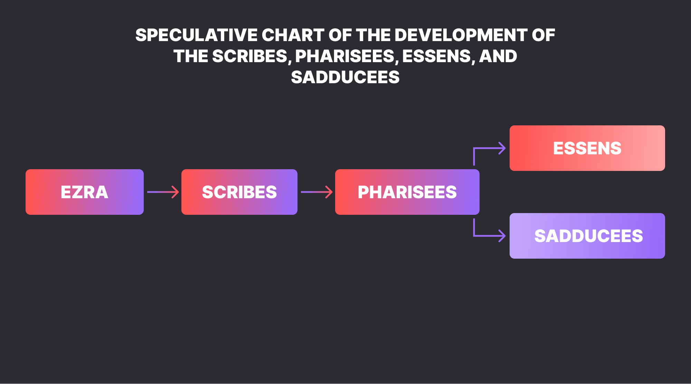

Contextual Background
Herod gathered two groups of people around him:
- τοὺς ἀρχιερεῖς (The High Priests)
- γραμματεῖς τοῦ λαοῦ (The Scribes of the people)
The Scribes
During Ezra and Nehemiah
It is agreed that the party known as the "scribes" or "teachers of the Law" in the New Testament had its beginnings with the Priest Ezra, who is considered the first scribe (Ezr. 7:6) or teacher of the Law (Neh. 8:9).
This is not to say, however, that ezra created the role of the scribe or that he was the first scribe known to history. The art of writing and the role of those who practiced it is as old as history itself. Thus, scribes, that is people trained in the art of writing, were around much longer before Ezra (1 Chr. 2:55; Jer. 36:26; 2 Sam. 8:16; Est. 3:12). In ancient civilizations the role of the scribe seems to have been limited to those in political and religious offices only. Nevertheless, our concern for the Scribal role is scoped only to the group of people who devoted themselves to the interpretation and teaching of Scriptures and would make their way into the pages of the New Testament.
When God gave the Law to the Israelites, He appointed the Levites to be in charge of the teaching of the Law (Deut. 33:10; 10:11). This continued to be the custom until shortly after the exile period. After the exile, Aramaic replaced the Hebrew tongue, therefore the Torah became a book to be not only read but also studied. 1 Thus we can see why King Artaxerxes gave orders to Ezra to find man able to teach the law of God ( Ezr. 7:25). During the time of Ezra and his contemporary Nehemiah, Israel saw a revival in the observance of the Law. It is possible that part of this revival had to do with the death penalty imposed by King Artaxerxes I against anyone who disobeyed it (Ezr. 7:26), but it is also true that after the work of Ezra many of the exiles came to genuine repentance (Ezr. 10:1-17).
The Intertestamental Period
Nevertheless, after the death of Ezra, the Levites returned to the neglecting of their duty. Part of this because it is the nature of man to turn away from God but also because it appears that the Levites had struggled getting the financial support due to them from the people (Malachi 3:8-9), as commanded in the Law (Numbers 18:24). The lack of funding almost put to cease the studying and teaching of the Law of God.
Therefore, as it had been the case with God's people before, they returned to idolatry and disobedience upon the death of Ezra and Nehemiah. After Nehemiah came a new leader; a so called Bagoses who reintroduced bravery into the priesthood and polluted the temple (Josephus Antia. XI 7. 1). The Israelites returned to the practice of sin and for the first time recorded intermarriage reached the high priesthood by the time of Alexander the great in 330 B. C., over a century after Nehemiah. Manasseh, the brother of the High priest, had married a foreigner by the name of Nicaso, who happened to be the daughter of the Samaritan ruler, Sanballat.
The elders of Jerusalem opposed him, (Josephus Antiq XIII 8.1) but nothing is said of the Levites, which could indicate that they were no longer ministers among God's people, or at least not the most influential authority in their ministerial field. It is believed that they had been replaced by these laymen known as elders. 2 Thus, if this is true, from this time on the studying and teaching of the Law passed from being in the hands of the Levites to being under the care of the group known as the elders; in this way establishing an organized ministry who would later be known as the Scribes.
To this era is assigned the birth of the "Great Synagogue", a place where laymen, that is non-levite men, gathered for the study of the Law. 3 It is also from this movement that the sect of pharisees was born. A sect that we won't explore as it is not part of the context but that is is helpful to mention, primarily because it is from the Pharisees that the Sadducees were born, but also worth mentioning to avoid any confusion between the The Scribes and the pharisees which should not be mistaken as being the same, for they were two different groups (although by the time of our Lord most scribes did pertain to the sect of the Pharisees).
The High Priesthood (Sadducees)

The theory that Herod was himself a sadducee (as said in Matt. 2:1, a theory that has many historical disadvantages and should be analyzed with care) might be alluded here for the first time. He called the scribes, whom were the scholars of the law, to aid him in this task, which makes perfect sense, but he also called the Sadducees, whom were technically useless in this matter. Although Matthew does not explicitly calls them by their denomination title, history tells us that it was the sect of the Sadducees who had the hold to the High priesthood. 4 The Sadducees were a political-religious sect who were more concerned with holding their status quo than with the interpretation of the Law and as for prophets they did not even believe in their writings (Acts 23:8).2 Thus, we can imagine that the reason why Herod summoned these characters was not with the hope of an academic input on the birth of the Messiah. But, that Herod called them because he himself was a sadducee is not the only option possible. He might have called them because he knew that they, just as himself, would be in deep trouble if someone from the Jews rose against the Roman government, as it would mean an end to their places of prominence. The chief priests themselves attested to this (Jhn. 11:48).
However, to understand the Sadducees we need to take a closer look into who they were.
The Hasmonean Period
The history of the Sadducees goes all the way back to the 3rd Century 5 before the time of the Maccabees. Some historians attribute the role of the first sadducee to the Maccabean John Hyrcanus I (Mid 2nd century B.C.), however, archeological discoveries support another theory which says that their beginning took place 100 years earlier 6.
It is theorized that the emergence of the sadducees happened from a conflict among two prominent followers of Pharisaism, whom as we have seen, emerged from the Scribes. The Sadducees were a reforming movement which adopted some of the ideas of the Greek philosophers as the denial of the after-life, the spiritual world, and divine predestination; something the sect of the epicureans had also adopted 7
The origin of the term Sadducee has caused much speculation among scholars. There are at least three popular takes on the dilemma:
- It means righteous ones
- It means syndics or judges
- It is derived from the name Zadok
It means righteous ones
Because the Hebrew term Zadok has the same radicals as the Hebrew word for righteousness (sdq), some have posed that it means "the righteous ones" 8, However, most modern scholars do not agree on this, since it is hard to reconcile how righteousness could have been assigned to this group of corrupt leaders.
It means syndics or judges
Another theory is that the term is a transliteration of the Greek Syndikoi meaning syndics or judges. The term can be traced to the 4th Century B.C. and appears to have been a title that the Roman government gave to individuals who had a position of authority over the people, similar to the authority of the Sadducees over the Jews. This is a tempting suggestion but because of the complications with the etymology of the term, most scholars reject this option as well. 9
It is derived from the name Zadok
The most popular theory in regards to the origin of the term Sadducee is the one that suggests that the term derives from the name Zadok(Greek: Σαδδουκαῖος; Hebrew צָדוֹק), after the priest who bore the same name and served under King David (1Ki. 2:35) 10. Some say the line of true Zadokite priests continued until 171 B.C. when Antichus Epiphanes IV installed Menelaus as High priest. 11 However others say the sect remained a strictly Zadokite group until the time of the Maccabees, who although being descendants of Jehoiarib rather than Jediah, as Zadok was, joined the sect at the time of John Hyrcanus I. It was during this period that the Sadduceed entered into a higher level of prominence.
Why the tern Zadokite, after Zadok, was chosen over the term Aaronite, after the the first priest Aaron, is unknown, but it can be suggested that the name Zadokite was chosen because Zadok seems to be the most recent renown High Priest, as he lived close to the time of the exile (Eze. 40:45-46) and also because there is record of the continuation of his line after the it. Same line that was reinstated to the Priesthood after the exile through Joshua son of Jehozadak (Hag 1:1).
During the time of the Maccabees, the High Priest held also the political leadership of Judea, and when the pharisees told Hyrcanus I to renounce to the High Priesthood and occupy himself with the ruling of the people only, he found himself offended. Jonathan, a great friend of Hyrcanus I, took advantage of the opportunity and convinced him to leave the Pharisees and Join the Sadducees, the sect Jonathan pertained to (Josephus, Antiquities of the Jews: XIII 10.6).
With the Maccabees holding a tight grip to the two most important offices of the land: the kingship and High priesthood, the Sadducees were setup to become the most influential sect of the Jews, politically speaking. When Rome conquered Judea the kingship was taken away from the Maccabees and given to the Herodian dynasty, as seen already in (Matt. 2:1). Nevertheless, since the Sadducees became poppets of the Roman government, they remained in prominence over Judea and were allowed to keep the High Priesthood office. In this way the Sadducees became one of the three main sects of Judaism during Jesus' time according to the Jewish historian Josephus. (Josephus, Antiquities of the Jews: XVIII 1.2).
Spiritual Application
It is not enough to know how God works, but when He is at work
What an irony! The scribes who were supposed to be up to date with God's latest works were not notified of His coming to earth. The scribes were well informed about the lineage and place where the Messiah would come from, but were totally ignorant with respect to timing. These men had given their lives to the study about God but in the process forgot to give their lives to God. They knew so much about God that never got to know God. They were so busy teaching others that God never found time to teach them.
How true this is of many theologians, Scholars, pastors today. They know all the rules of Homiletics, Hermeneutics, and Biblical criticism. They know the Hebrew and the Greek but can't speak but yet cannot understand God when He speaks. They know how to study God's word but do not know how to let it study their lives. They know how to read and write the most complex academic works, but don't know how to pray a simple prayer.
It does not matter how many degrees you have hanging on your wall or how many years you have been in the ministry, if you don't have an intimate, personal relationship with Christ, to God you continue to be an ignorant individual, as for as He is concerned. It is not enough to know how God works but also to know when He is at work (John 4:35).
The scribes knew the where of God's coming, but the when was revealed to those who were ready for it. You might be well learned, but are you ready to listen to His voice? When was the last time you felt the presence of the Holy Spirit in your life? When was the last time you saw God work through you? if it has been a while, I would be worried and make things straight with Him immediately, for God has not stopped working, it only means He has not been using you. Perhaps He found someone else who was not as experienced or equiped as you but was ready? Why don't you find out with Him what is going on?
References
1 Beckwith, "A Survey of the New Testament," 18.
2 Beckwith, "A Survey of the New Testament," 23.
3 Beckwith, "A Survey of the New Testament," 23.
4 Robert H. Gundry, A Survey of the New Testament, 5th Ed. (Grand Rapids, Michigan: Zondervan, 2012), 87; John Bowker, The Complete Bible Handbook: An Illustrated Companion, (New York: Barns & Noble publishing, 2005), 288.
5 Gundry, A Survey of the New Testament, 88.
6 Roger T. Beckwith, "A Survey of the New Testament," Revue de Qumrân 11, no. 1 (October 1982): 9, http://www.jstor.org/stable/24606828.
7 Beckwith, "A Survey of the New Testament," 38.
8 Beckwith, "A Survey of the New Testament," 9.
9 Merrill C. Tenney, The Zondervan Encyclopedia of the Bible, Volume 5: Revised Full-Color Edition, (Gran Rapids, Michigan: Zondervan Academic, 2010), https://search-ebscohost-com.ezproxy.biola.edu/login.aspx?direct=true&db=nlebk&AN=1524966&site=eds-live&scope=site.
10 Tenney, The Zondervan Encyclopedia of the Bible, Volume 5: Revised Full-Color Edition
11 Beckwith, "A Survey of the New Testament," 10; John Bowker, The Complete Bible Handbook: An Illustrated Companion, (New York: Barns & Noble publishing, 2005), 288.
Bibliography
- Beckwith, Roger T. “THE PRE-HISTORY AND RELATIONSHIPS OF THE PHARISEES, SADDUCEES AND ESSENES: A TENTATIVE RECONSTRUCTION.” Revue de Qumrân 11, no. 1 (October 1982): 3–46. http://www.jstor.org/stable/24606828.
- Bowker, John. The Complete Bible Handbook: An Illustrated Companion. New York: Barns & Noble publishing, 2005.
- Gundry, Robert H. A Survey of the New Testament. 5th ed. Grand Rapids, Michigan: Zondervan, 2012.
- Josephus, Flavius. Josephus: Complete Works. Grand Rapids, Michigan: Kregel Publications, 1981.
- Tenney, Merrill C. The Zondervan Encyclopedia of the Bible, Volume 5: Revised Full-Color Edition. Gran Rapids, Michigan: Zondervan Academic, 2010. https://search-ebscohost-com.ezproxy.biola.edu/login.aspx?direct=true&db=nlebk&AN=1524966&site=eds-live&scope=site.